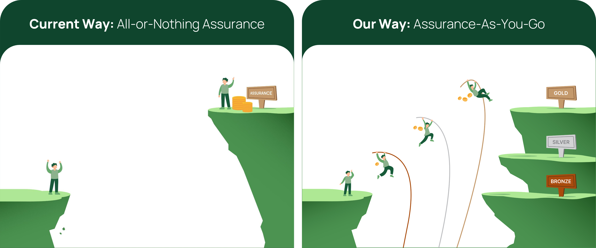
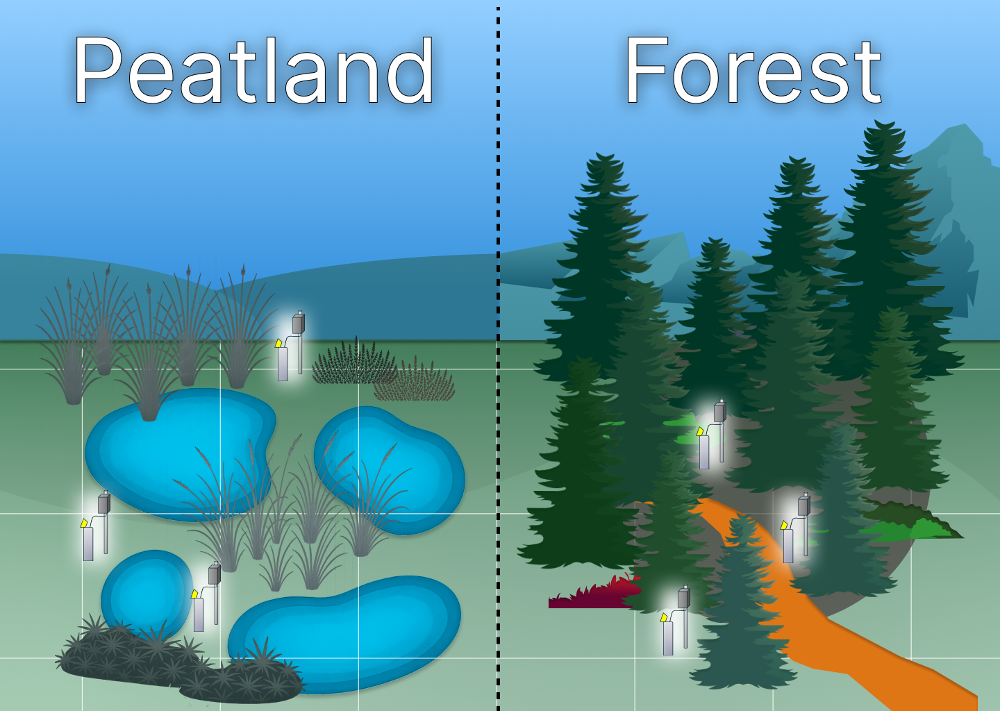

Assurance tiers
Our modular monitoring framework offers increasing levels of assurance, from foundational insights to high-confidence, model-backed verification.

How higher tiers improve data assurance
As monitoring tiers increase, so does the spatial resolution and density of data. This allows our models to capture natural variation more accurately, improving predictions of water table depth, peatland condition, and carbon flux.

Why resolution matters
- Better representation of natural variation: Higher‑density data captures micro‑topography, hydrological patterns, and vegetation differences that low‑resolution approaches miss.
- Improved model calibration: More detailed inputs reduce uncertainty and allow models to reflect real‑world behaviour more closely.
- Higher confidence in predictions: Finer resolution improves estimates of water table depth, emissions, and restoration impact.
- Stronger assurance: As resolution increases, so does the reliability of MRV outputs, supporting higher‑tier verification.
Tier summary
Choose the tier that matches your project’s maturity, risk profile, and reporting requirements.

What Each Tier Provides
Bronze — Essential Monitoring
A cost‑efficient baseline suitable for projects seeking foundational water‑table monitoring across all management zones. Bronze provides continuous WTD data with basic redundancy, ensuring at least one reliable data stream per zone. Ideal for early‑stage projects or landscapes with lower variability.
Silver — Enhanced Coverage
Silver increases spatial representation and statistical robustness with additional sensors per zone. EO‑supported hydrology surfaces improve understanding of landscape‑scale water‑table behaviour. A strong balance between cost and confidence.
Gold — High‑Assurance MRV
Gold delivers high‑density sensor networks, predictive modelling pipelines, and verification‑ready outputs. This tier significantly reduces risk of data gaps and provides high‑confidence carbon assessments suitable for MRV frameworks.
Platinum — Comprehensive Spatial Intelligence
Platinum offers the most detailed monitoring package, with very high spatial resolution and maximum redundancy. Advanced EO integration and modelling provide the highest certainty in hydrology and carbon estimates. Best suited for large, complex, or high‑value projects where uncertainty must be minimised.